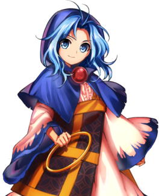
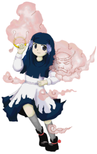
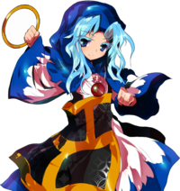
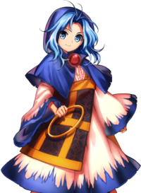

- Welcome to Touhou Wiki!
- Please register to edit. For assistance, check in with our Discord server or IRC channel.
Ichirin Kumoi
Ichirin Kumoi kɯmoi it͡ɕiɽʲiɴ (♫) | |
|---|---|
|
 Ichirin Kumoi in Antinomy of Common Flowers The Great Wheel, Having Guarded and Been GuardedMore Character Titles | |
| Species | |
| Abilities |
Using nyuudou |
| Age |
At least 1000 years |
| Occupation |
Guardian of the Palanquin Ship |
| Location | |
Music Themes | |
| |
Appearances | |
| Official Games | |
| |
| Print Works | |
| |
Ichirin Kumoi (雲居 一輪 Kumoi Ichirin) is a former human turned nyuudou user that the heroine encounters on their arrival at the Palanquin Ship. Along with Unzan, she guards the Palanquin Ship of her own accord in order to assist in the revival of Byakuren Hijiri.
General Information[edit]
Ichirin, along with Unzan, first appeared as the Third stage boss of Undefined Fantastic Object and later as a playable character in Hopeless Masquerade and Urban Legend in Limbo. As part of a team with Unzan, they work together to face their challenges.
Personality[edit]
Ichirin is described as having a pleasant personality, but can also be tenacious at times.
Ability[edit]
- Using nyuudou
Since Unzan is a nyuudou, she's got the ability to manipulate her partner Unzan, mainly to perform attacks. In spell cards, the danmaku are all shot by Unzan, with Ichirin controlling, although there was one spell card Lightning "Electrified Nyuudou" where she did shoot danmaku herself. On the other hand, the non-spell cards are entirely shot by Ichirin who, strangely among the Touhou Project characters, doesn't use danmaku in the shape of bullets at all, shooting only lasers and long-shaped danmaku.
Occupation[edit]
As a member of the Myouren Temple, Ichirin lives there and trains as a priest. Because of Unzan's physical strength, the two of them are tasked with doing physical labor, especially in high places.
Backstory[edit]
Her Symposium of Post-mysticism article gives her the following backstory:
Ichirin used to be human. Having heard of a man-eating foreseeing nyuudou, she dauntlessly went to encounter him and give him a scare. When she finally saw what looked like the feet of a monk, taking care not to raise her head, she shouted "The foreseeing nyuudou was foreseen!", a repelling spell.[1] While that would normally be enough to make a nyuudou disappear, the sheer shock of his utter defeat and resulting admiration for the courageous girl prompted Unzan to devote the rest of his life to protecting her.
After this, Ichirin's life completely changed - she no longer felt any fear towards youkai, and was hated by humans at times. After going though a tempestuous life, before she knew it, she had become a youkai.
By the time of Undefined Fantastic Object, Ichirin and Unzan have both joined Byakuren Hijiri due to her acceptance of youkai as well as her understanding of the human heart.
Character Design[edit]
Origin[edit]
Ichirin's inspiration may come from the second volume of Shigi san Engi. In the story, Daigo Tennou becomes dangerously ill one day, so his subjects visited Myouren after hearing of his miracles to beg him to come and pray for the emperor's health. Myouren rejected their request, but proposed that he would pray at his temple and he would inform them when he finished. After approximately three days passed, Ken no Gohou (剣の護法), a flying messenger of Bishamonten, appeared near the court, who implied the end of Myouren's praying. After that, the emperor recovered very soon. This messenger had a sword in one hand, numerous blades around his neck, and he flew on the wheel very similar to a dharmacakra, followed by wind or clouds.
Another possible source of inspiration for the Ichirin and Unzan character is an old Japanese tale about tsukumogami (youkai born from an old object attaining a spirit of its own after being around for 100 years). This story features a tsukumogami born from a Buddhist rosary called Ichiren Nyuudou.
Name[edit]
Ichirin Kumoi (雲居 一輪) is her full name. The characters for Kumoi (雲居) mean "Residence in the Clouds". The characters for Ichirin (一輪) mean "One Wheel". This name would indicate two directions. First, it is possible that Ichirin's name is partly inspired from the aforementioned Dharmacakra: It is called "Hourin" (法輪) in Japanese, a noun which shares one kanji with Ichirin's name. Second, "ichi-rin" is a unit of counting flowers, e.g. "ichi-rin no bara" (single rose); her and Unzan's title also includes the word relating to flower "tairin" (大輪), which means "the bigness of flower" or "big flower".
Design[edit]
Ichirin has light purple wavy hair, and dark purple eyes. She carries a medium-sized yellow ring in her right hand. On her head, she wears a headdress similar to a Hijab or a nun's headdress. She wears a white dress with a blue trim at the bottom, and wears black shoes. Her outfit closely resembles that of a Buddhist nun's, which was a component ZUN thought appropriate for the Buddhist-themed story.[2] She is also always seen with Unzan.
In Hopeless Masquerade, her hair is shown to be shoulder-length in a shade of cyan. Her black shoes are white, her top is a button-up blouse, and she has a red orb around her neck. She also carries two rings, one in each hand. Over her blouse and skirt, she also has a black and gold Japanese-style kesa, which she wears over her shoulder.
Story[edit]
- Undefined Fantastic Object
In Undefined Fantastic Object, she stands guard at the Palanquin Ship in order to keep those who would prevent Byakuren Hijiri's revival away. Initially she attacks the heroine under the assumption that they were there to stop her, but upon realizing they had some parts of the treasure needed to unseal Byakuren, she assumed they were on her side and happily let them through.
Relationships[edit]
As the Guarded, she is Unzan's handler, and he is her protector. He is devoted to watching over her. As he is very shy, he will speak very quietly and only to her.
Not much is known about Ichirin's relationships with other characters, save for Byakuren Hijiri. She is a devout follower of Byakuren, who showed kindness not only towards her but towards Unzan as well.
She is also part of Minamitsu Murasa's group of youkai.
Gallery[edit]
Ichirin art from Hopeless Masquerade
Ichirin art from Urban Legend in Limbo
Ichirin in Symposium of Post-mysticism
Skills[edit]
| Name | Translated | Comments | Games | Usage | ||
|---|---|---|---|---|---|---|
| Total: 9 | ||||||
| 垂雲の鉄槌 | Hanging Cloud's Iron Hammer | Taoism-aligned | HM ULiL AoCF |
Equippable 2C 2C | ||
| 一握りの浮雲 | Handful of Floating Cloud | Buddhism-aligned | HM ULiL AoCF |
Equippable 8C 8C (except at top of screen) | ||
| 小さな神立雲 | Small Thunder Cloud | Taoism-aligned Not named in ULiL or AoCF |
HM ULiL AoCF |
Equippable Charged B attack Charged B attack | ||
| 怒りの走雲 | Raging Running Cloud | Buddhism-aligned | HM ULiL AoCF |
Equippable 5C 5C | ||
| 嶺雲のご来光 | Sunrise of Mountain Clouds | Shinto-aligned | HM ULiL AoCF |
Equippable 4C 4C | ||
| 殴殺の流雲 | Drifting Cloud of Bludgeoning | Shinto-aligned | HM | Equippable | ||
| 慈悲の北颪 | North Mountain Wind of Mercy | Buddhism-aligned | HM ULiL AoCF |
Equippable 6C 6C | ||
| 真夏の夜の軟禁 | Midsummer Night's Confinement | Aided by Occult Ball | ULiL AoCF |
A+B with Occult Ball A+B with Occult Gauge | ||
| 滑空宝輪 | Gliding Treasured Rings | AoCF | 8C at top of screen | |||
Spell Cards[edit]
| Name | Translated | Comments | Games | Stage | ||
|---|---|---|---|---|---|---|
| Total: 29 | ||||||
| 鉄拳「問答無用の妖怪拳」 | Iron Fist "An Unarguable Youkai Punch" | UFO | St. 3: E/N | |||
| 神拳「雲上地獄突き」 | Divine Fist "Hell Thrust from Above the Clouds" | UFO | St. 3: H | |||
| 神拳「天海地獄突き」 | Divine Fist "Hell Thrust from the Heavenly Seas" | UFO | St. 3: L | |||
| 拳符「天網サンドバッグ」 | Fist Sign "Heavenly Net Sandbag" | UFO | St. 3: E/N | |||
| 連打「雲界クラーケン殴り」 | Barrage "Cloud World Kraken Strike" | UFO | St. 3: H | |||
| 連打「キングクラーケン殴り」 | Barrage "King Kraken Strike" | UFO | St. 3: L | |||
| 拳打「げんこつスマッシュ」 | Hand Strike "Fist Smash" | UFO | St. 3: E/N | |||
| 潰滅「天上天下連続フック」 | Annihilation "Consecutive Hooks Throughout Heaven and Earth" | UFO | St. 3: H/L | |||
| 大喝「時代親父大目玉」 | Thunderous Yell "A Scolding from a Traditional Old Man" | UFO | St. 3: E/N | |||
| 忿怒「天変大目玉焼き」 | Rage "Calamity Scolding Scorch" | UFO | St. 3: H | |||
| 忿怒「空前絶後大目玉焼き」 | Rage "First and Last of Its Kind Scolding Scorch" | UFO | St. 3: L | |||
| 拳骨「天空鉄槌落とし」 | Fist "Falling Sky Hammer" | DS | St. 5 | |||
| 稲妻「帯電入道」 | Lightning "Electrified Nyuudou" | DS | St. 5 | |||
| 鉄拳「入道にょき」 | Iron Fist "Nyuudou Nyoki" | DS | St. 5 | |||
| 嵐符「仏罰の野分雲」 | Storm Sign "Autumn Storm Clouds of Buddhist Retribution" | HM ULiL AoCF |
Use Use Use | |||
| 積乱「見越し入道雲」 | Cumulonimbus "Foreseeing Nyuudou Cloud" | HM ULiL AoCF |
Use Use Use | |||
| 拳固「懺悔の殺風」 | Clenched Fist "Deadly Wind of Penitence" | HM ULiL AoCF |
Use Use Use | |||
| 「華麗なる親父時代」 | "Traditional Era of a Splendid Old Man" | HM | Use-LW | |||
| 拳符「怒りの大雲塊」 | Fist Sign "Great Cumulus of Rage" | HM | Story | |||
| 入道「夏の幻想太郎」 | Nyuudou "Genso-Tarou Cloud in Summer" | HM | Story | |||
| ＊２６５センチの魔人現る！＊ | *A 265-Centimeter Fiend Appears!* | ULiL AoCF |
Use-LW Use-LW | |||
| 悪符「八尺のオカルト柱」 | Evil Sign "Eight-Shaku Occult Pillar" | ULiL | Story | |||
| ＊謎の女に囚われた真夏の夜＊ | *A Midsummer Night Trapped by a Mysterious Woman* | ULiL | Story | |||
| 拳風符「入道叢雲風水拳」 | Fist Wind Sign "Nyuudou Murakumo Feng Shui Fist" | Co-owner with Futo | AoCF | Story | ||
| 拳星符「入道叢雲スレイブスパーク」 | Fist Star Sign "Nyuudou Murakumo Slave Spark" | Co-owner with Marisa | AoCF | Story | ||
| 撃拳符「スカンダの怪雲拳」 | Strike Fist Sign "Skanda's Strange Cloud Fist" | Co-owner with Byakuren | AoCF | Story | ||
| 恋拳符「ローズカプリチオ怪雲拳」 | Love Fist Sign "Rose Capriccio Strange Cloud Fist" | Co-owner with Koishi | AoCF | Story | ||
| 光拳符「インドラのヴァジュラ怪雲拳」 | Light Fist Sign "Indra's Vajra Strange Cloud Fist" | Co-owner with Byakuren | AoCF | Story | ||
| 拳水符「入道叢雲ミズバク拳」 | Fist Water Sign "Nyuudou Murakumo Water Bomb Fist" | Co-owner with Nitori | AoCF | Story | ||
Additional Information[edit]
- During Stage 3, Ichirin refers to Byakuren using the words as 姐御 (anego) and 姐さん (ane-san or nee-san). Both terms are variants on "elder sister", but these versions usually mean a female superior who is not one's real sister, such as a female gang boss.
- Essentially, Unzan is the Stage 3 boss of Undefined Fantastic Object, not Ichirin; Ichirin herself came as a way to have an actual character on the screen for an hit box according to ZUN. When trying to think of what type of youkai to call Ichirin in Part 3 of Symposium of Post-mysticism, even Byakuren, who calls herself an expert on youkai, could only hesitantly refer to her as "um... a controller of a giant nyuudou."
- One of her alternate color palettes in Hopeless Masquerade resembles Index from To Aru Majutsu no Index.
Fandom[edit]
Official Profiles[edit]
|  | ○３面ボス 守り守られし大輪
雲居 一輪（くもい いちりん） 種族：妖怪 [...] 何やら秘密のありそうな船を守っている妖怪。 見張りは誰かに命令されたわけではなく、自主的に行っているのである。 一輪の性格は、真面目だが機転が利いて要領がよい。 [...] ムラサ達の仲間の妖怪で、白蓮を慕う者の一人。 |
Stage 3 boss The Big Wheel, Having Guarded and Been Guarded
Race: youkai [...] A youkai guarding the ship which seems to have a secret. She wasn't ordered by someone to stand guard, she's doing it of her own accord. Ichirin's personality is very straightforward, but she's quick-thinking and understands things easily. [...] Since Ichirin is a member of Murasa's group of youkai, she also misses Byakuren. |
|  | 圧倒する妖怪行者 雲居一輪＆雲山
命蓮寺の住職が寺を留守にしていた。 特技 静かなる怒気 一輪がダメージを受けると「怒」ゲージが蓄積されていき、 ラストワード 華麗なる親父時代 観客の人気の声に応え、雲山が戦闘に本格介入します。 |
Overwhelming Youkai Ascetic, Kumoi Ichirin & Unzan
The Myouren Temple's chief priest has left the temple for a while. Special skill: Quiet Rage As Ichirin receives damage, her "rage" meter gets filled up, Last Word: The Magnificent Era of Old Men Answering the voices of popularity from the audience, Unzan enters the battle for real. |
|  | 驚愕！長身の入道使い
雲居一輪＆雲山 オカルト名 「八尺さま」 傍らに付き添う雲山が全てをなぎ倒す圧倒的パワーキャラ。 今回はオカルトアタックで八尺さまの力を解放し |
Astonishing! The Tall Nyuudou Handler
Ichirin Kumoi & Unzan Occult Name "Hasshaku-sama" An overwhelming power character, accompanied by Unzan who can mow down anything; That’s Ichirin. This time around she’s acquired the ability to use her Occult Attack to release Hasshaku-sama’s power onto her opponent, trapping them in a cursed, enclosed space. |
Official Sources[edit]
- 2009/03/08 Undefined Fantastic Object Demo - Stage 3 dialogue; Omake.txt (pre-official profile)
- 2009/08/15 Undefined Fantastic Object - Stage 3 dialogue; Settings and Extra Story.txt (official profile)
- 2010/03/14 Double Spoiler - Stage 5 spellcard comments
- 2010/12/25 Oriental Sacred Place - Chapter 12
- 2011/11/25 Wild and Horned Hermit - Chapter 9 (cameo)
- 2012/04/27 Symposium of Post-mysticism - Ichirin Kumoi & Unzan Profile
- 2013/05/26 - Hopeless Masquerade - Playable character
References[edit]
- ↑ Foreseeing nyuudou are youkai monks who only show their feet at first. When their victim would look up to see their face, they would grow larger so that their heads would remain out of sight. It's been said that when the victim looks straight up, their head would get chopped off.
- ↑ Chara☆Mel. "Interview with Chara☆Mel" (in 日本語). Retrieved August 27, 2011.
| This page is part of Project Characters, a Touhou Wiki project that aims to write proper descriptions for all official characters of Touhou Project. Please keep the character page guidelines in mind when contributing. |